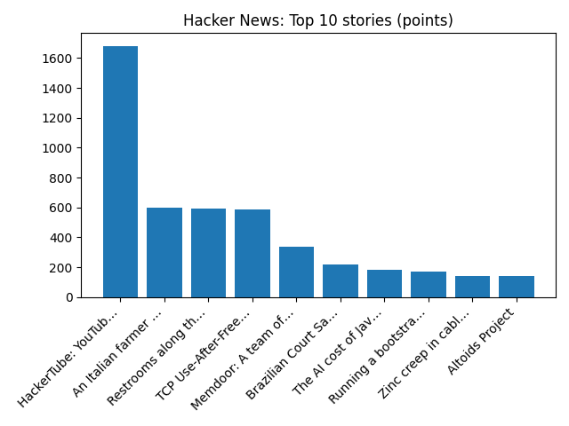

YOUR DAILY INTELLIGENCE BRIEF · 2026-11-01
The world, in focus.
No recent news coverage available.
🌍 Global coverage
🌌 Beyond Earth

Colors of the Moon
📜 On this day
- 2024 A concrete canopy collapses at the Novi Sad railway station, killing 16 people and injuring three.
- 2012 A fuel tank truck crashes and explodes in the Saudi Arabian capital Riyadh, killing 26 people and injuring 135.
- 2011 Mario Draghi succeeds Jean-Claude Trichet and becomes the third president of the European Central Bank.
- 2009 An Ilyushin Il-76 crashes near the Mir mine after takeoff from Mirny Airport in Yakutia, killing all 11 aboard.
📈 Topic activity
Source health: 24/24 healthy
View original detailed report
Daily Knowledge Garden — 2026-11-01
🧭 Daily Summary
Global coverage includes Russia's FSB says minor detained over park attack threat after US tip-off - Reuters; Trump heads to Iowa, Kansas for rallies before midterms - Reuters; At a Moscow movie screening, Anthony Bourdain's Russian fixer remembers the late chef. Local coverage includes Skilled trades now offer direct path to six-figure pay without college debt thanks to emerging tech industry - 930 WFMD Free Talk; USDA affordable housing in Loudoun evacuated due to unsafe conditions - NBC4 Washington.
🌍 Global News (cross-source)
- Russia's FSB says minor detained over park attack threat after US tip-off - Reuters — Reuters — Headlines (Google News)
- Trump heads to Iowa, Kansas for rallies before midterms - Reuters — Reuters — Headlines (Google News)
- At a Moscow movie screening, Anthony Bourdain's Russian fixer remembers the late chef — NPR — Science
- Crypto firm Binance covers 90% of losses after $6.3bn hack — BBC — World
- Living with high prices in Virginia's 1st Congressional District — NPR — Top Stories
🏙️ Local News
- Skilled trades now offer direct path to six-figure pay without college debt thanks to emerging tech industry - 930 WFMD Free Talk — Google News — Northern Virginia
- USDA affordable housing in Loudoun evacuated due to unsafe conditions - NBC4 Washington — Google News — Northern Virginia
- USDA apartment complex in Loudoun evacuated due to unsafe conditions - NBC4 Washington — Google News — Northern Virginia
- Arlene Barb Obituary (2026 - 2026) - Edinburg, VA - Northern Virginia Daily - Legacy | Obituary — Google News — Northern Virginia
- 'I'm going to be priced out': Affordability, constitutional amendments drive Virginia voters to the polls - WUSA9 — Google News — Northern Virginia
🚀 Hacker News (Top 5)
- HackerTube: YouTube built from videos recommended by HN — 1682 points, 444 comments
- An Italian farmer found some unknown seeds in his attic and planted them — 600 points, 173 comments
- Restrooms along the Norwegian Scenic Routes — 595 points, 338 comments
- TCP Use-After-Free: CVE-2026-98432 / CVSS 9.8 — 587 points, 287 comments
- Memdoor: A team of 5 Qwen3.8-27B models beats Fable 5 on LiveCodeBench Hard — 340 points, 165 comments

🌍 Wikipedia — On This Day (selected)
- 2024 — A concrete canopy collapses at the Novi Sad railway station, killing 16 people and injuring three.
- 2012 — A fuel tank truck crashes and explodes in the Saudi Arabian capital Riyadh, killing 26 people and injuring 135.
- 2011 — Mario Draghi succeeds Jean-Claude Trichet and becomes the third president of the European Central Bank.
- 2009 — An Ilyushin Il-76 crashes near the Mir mine after takeoff from Mirny Airport in Yakutia, killing all 11 aboard.
- 2004 — A suicide bombing at the Carmel Market in Tel Aviv kills three people and injures 50.
🎲 Wikipedia — Random Article
Bruce Thornton (cornerback)
Bruce Thornton Sr. He played college football for the Georgia Bulldogs.
https://en.wikipedia.org/wiki/Bruce_Thornton_(cornerback)
🌌 NASA APOD
Feed Health
- Reuters — Headlines (Google News): ok (15 articles)
- Reuters — World (Google News): ok (15 articles)
- Reuters — Business (Google News): ok (15 articles)
- BBC — World: ok (15 articles)
- BBC — Tech: ok (15 articles)
- BBC — Business: ok (15 articles)
- BBC — Science: ok (15 articles)
- AP — Headlines (Google News): ok (15 articles)
- AP — Politics (Google News): ok (15 articles)
- AP — Business (Google News): ok (15 articles)
- NPR — Top Stories: ok (10 articles)
- NPR — Politics: ok (10 articles)
- NPR — Business: ok (10 articles)
- NPR — Science: ok (10 articles)
- NPR — Technology: ok (10 articles)
- ScienceNews: ok (15 articles)
- ScienceDaily — Top: ok (15 articles)
- Nature — Technology: ok (15 articles)
- Google News — Northern Virginia: ok (15 articles)
- Google News — Northern Virginia traffic: ok (15 articles)
- Google News — Northern Virginia weather: ok (15 articles)
- Wikipedia — On This Day: ok (10 articles)
- Wikipedia — Random: ok (1 articles)
- NASA — APOD: ok (1 articles)
Runs so far today: 1